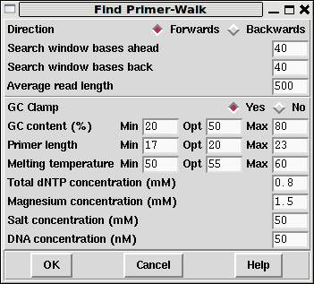
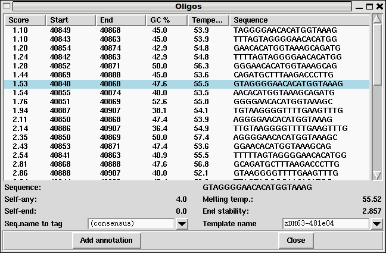

The "Find Primer Walk" function from the Commands menu is an interface to the Primer3 program (builtin to Gap5 so it does not need an external installation). Currently it only allows for selection of a single internal oligo suitable for "walking" along a template. It is designed for manual finishing work and is not appropriate for automatic finishing. Future plans are to add PCR support.
The command brings up its own dialogue window.

The top portion of this window controls where to look for primers. By default it will be either side of the editing cursor location. We also specify here what strand we wish to run our experiment on.
Below this are a series of Primer3 parameters. Please see the Primer3 documentation for a full description of these.
Upon hitting OK, and assuming that some primers can be found, a new window showing the available choices is presented.

The primers show are sorted by Primer3 score, with lower being better. Clicking on any of the other headings in the table allows the data to be re-sorted by that column. Clicking the left mouse button on any line will show the location of this primer in the main editor window as an underlined region. It also updates the bottom half of the Oligos window with further details.
At the bottom of the window are two editable selections. The left most
labelled "Seq. name to tag" allows us to pick a sequence we wish to
place an oligo (OLIG) annotation on, which defaults to the
consensus sequence. The right selection box labelled "Template name"
is an list of identified templates at this region, however this is not
necessarily exhaustive as it only includes the sequences at this
position and may miss some read-pairs that span this region. If you
have a specific template in mind you can also type in the name of it
to here.
Pressing the "Add annotation" button then creates an oligo annotation. The text associated with the annotation will depend on the primer chosen, but an example follows.
Sequence AACACATGGTAAAGCAGATG Template zDH64-714h06 GC 40.0 Temperature 53.45 Score 1.54377204143 Date_picked Thu Aug 12 17:31:18 BST 2010 Oligoname ??